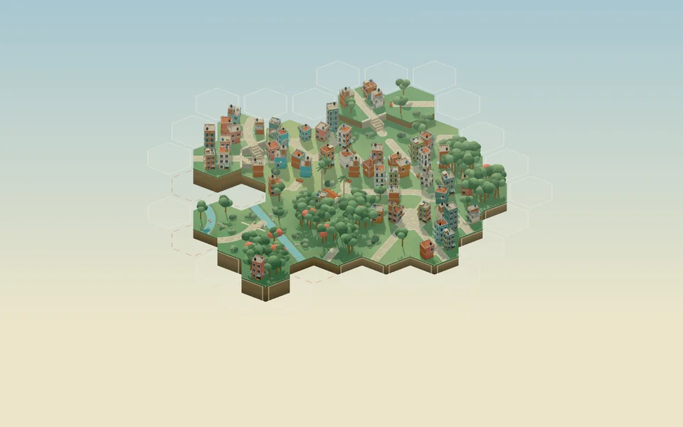
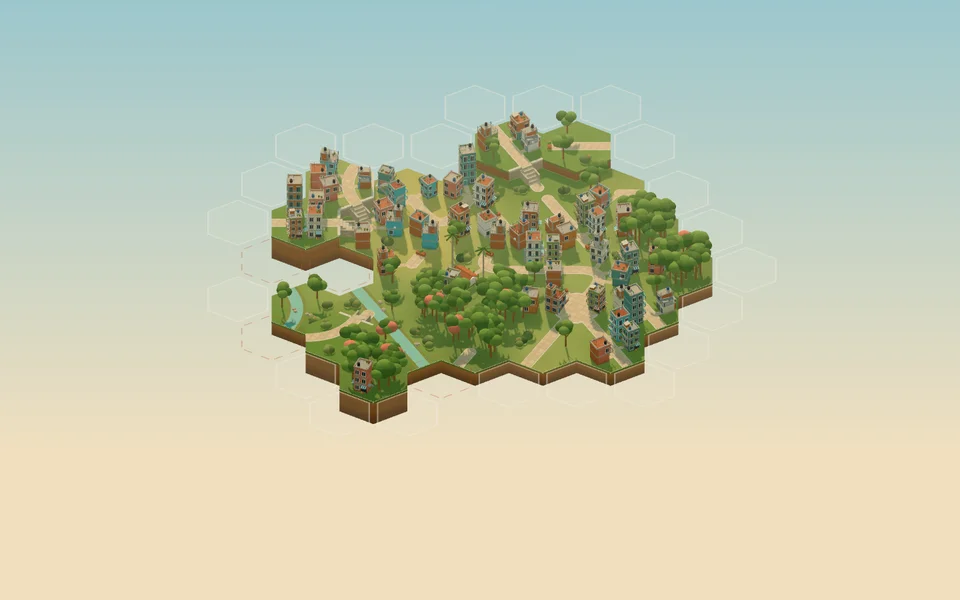
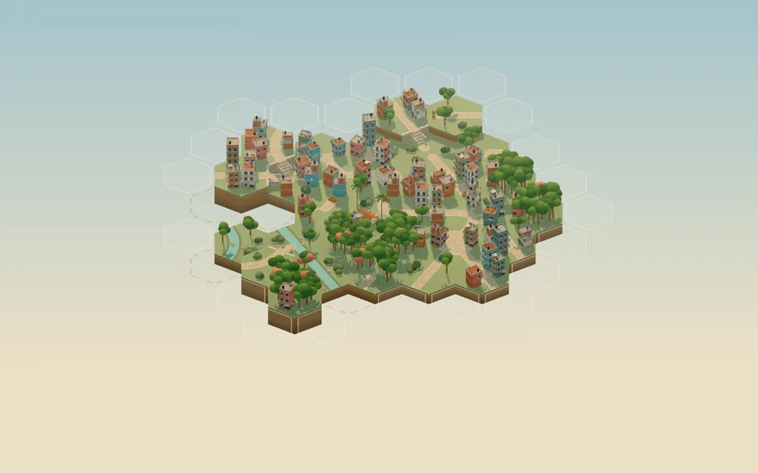
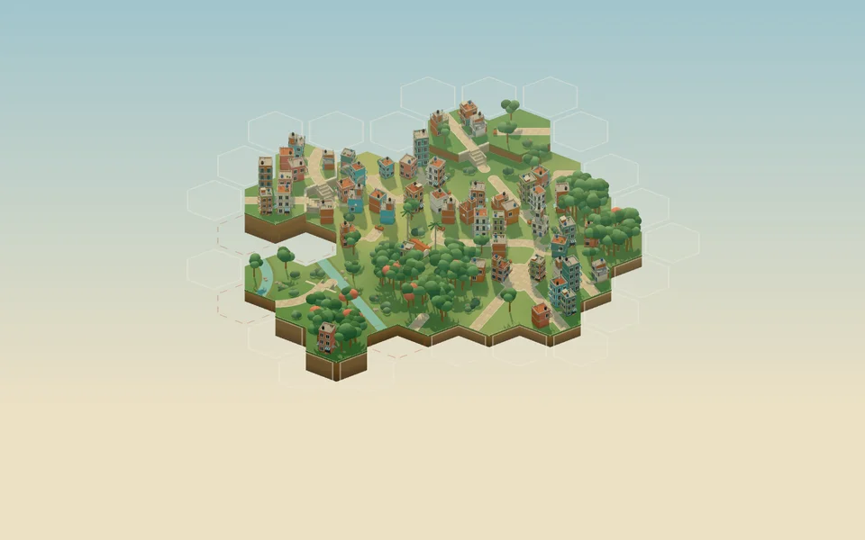
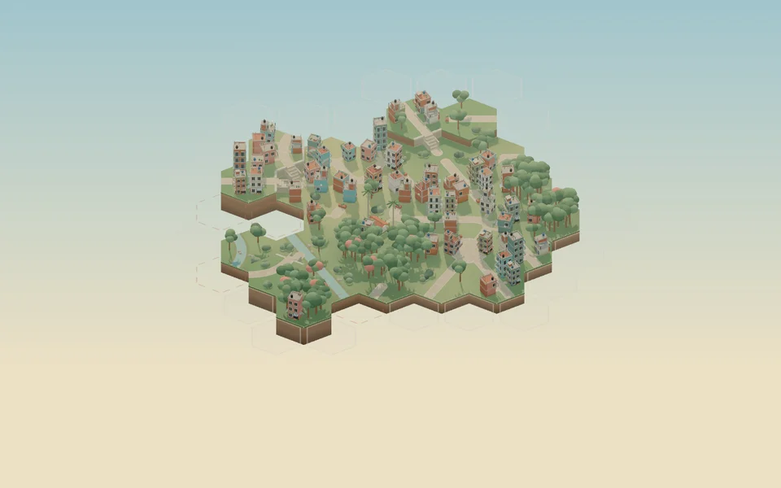
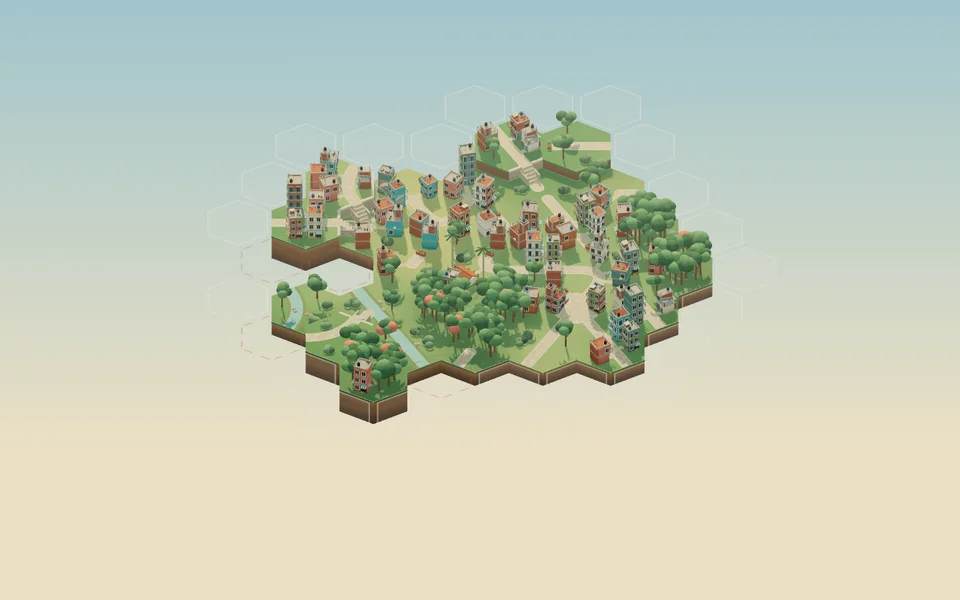

Actual engine captures. All candidates use the same 30-tile board, camera, 1440 × 900 frame, and exposure 1.0. Trees retain their baseline geometry at this milestone.

OriginalBalanced Barrio


Selected direction: C, Balanced Barrio with Neutral, after independent visual review. Alternatives remain configurable. Runtime originals and measurements are saved with the art-direction document.